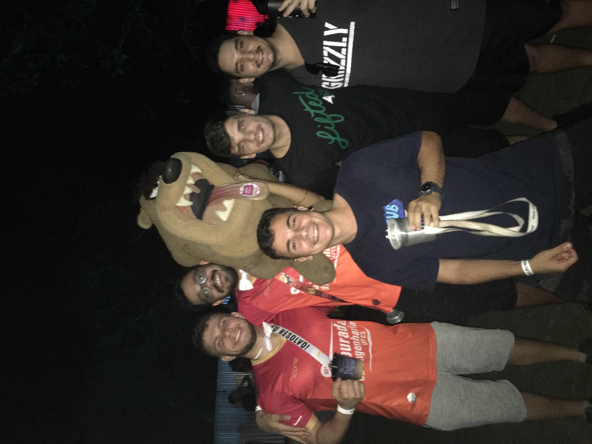
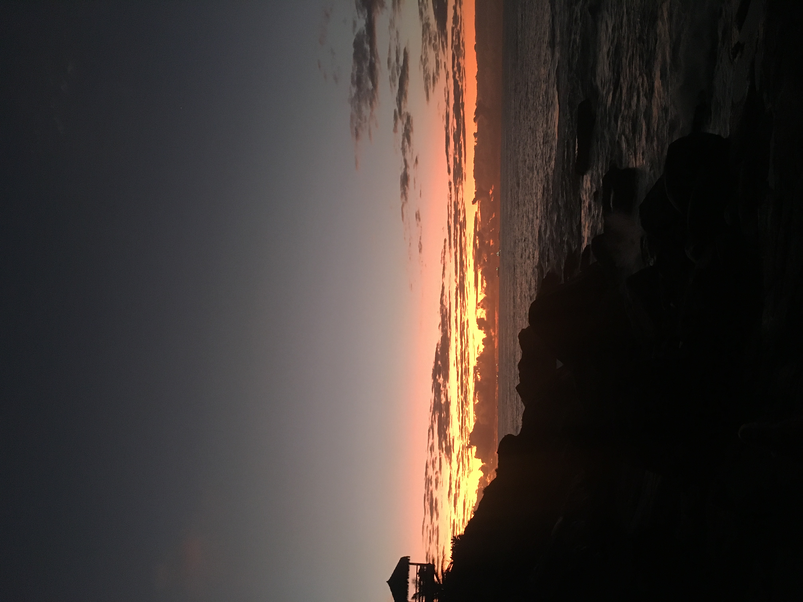
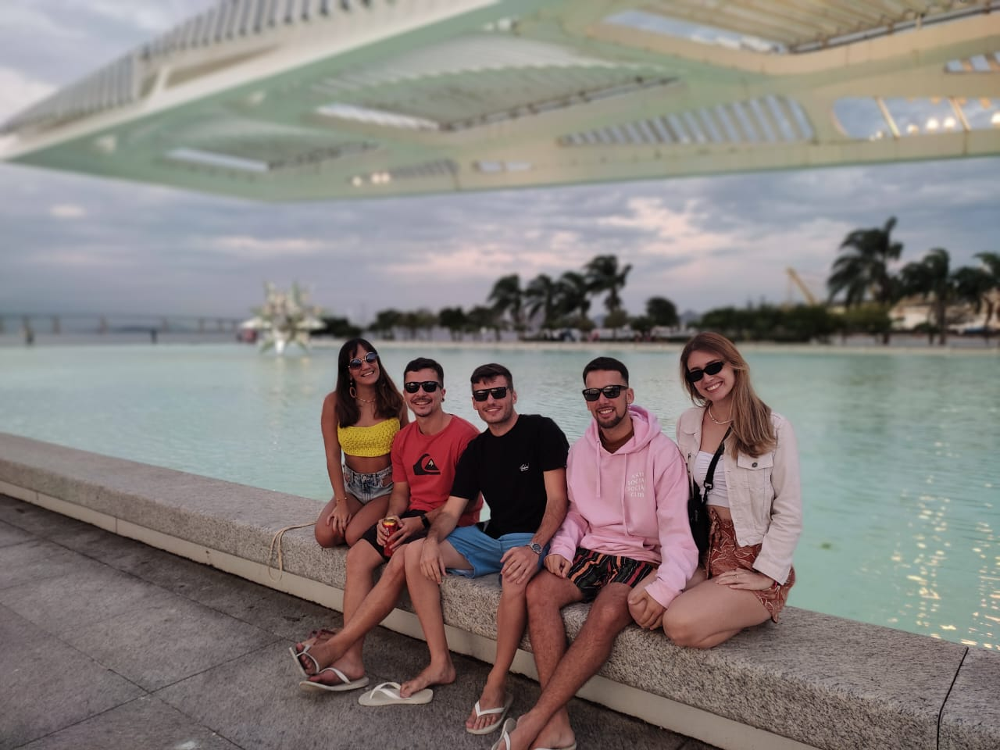

Agora, em 2022, depois de vários amores, e após o fim de um que deixou
ela meio desiludida, resolveu criar o bastante conhecido Bonde do Golpe,
que saia por ai conquistado corações e iludindo vários caras inocentes.

Na mesma época eu estava acabando de sair de um longo relacionamento,
e estava numa fase de querer curtir a vida, estava malhando, saindo pra calouradas
a fim de explorar o mundo de solteiro, que não vivi na minha fase mais jovem. Estava
bem, administrando uns contatinhos, com a cabeça de que não ia namorar tão cedo (inocente).

Foi quando uns amigos me chamaram pra "conhecer" o Bonde do Golpe, que nem sabiamos
que estavamos sendo vítimas, e eu fui conhecer nada mais, nada menos,
que a integrante mais perigosa, Brida Alcantara Martins. Que como já disse,
tinha preferência por caras mais novos e os iludia com facilidade devido sua vasta experiência.
Nem cheguei no local e já tomei o bote, enfeitiçado com o beijo dela, já fiquei doido pra ver
novamente e já segui no Instagram na hora que sai do encontro.
Não deu outra, já começamos a conversar adoidados, ela só no interesse de me iludir
e se distrair, e eu já louco pra ver ela, com inícios de sintomas de paixão. Não deu uma semana
e fui buscar ela para um jantar romântico na minha casa, onde o cardápio principal era vinho e amendoim.
Nesse dia ela me surpreendeu com sua safadeza insana, que fez a mente de um cara inocente
como eu explodir. Transamos e conversamos a noite toda, parecia que a gente já tinha uma intimidade
absurda, "que conexão maravilhosa era aquela?" fiquei me perguntando. E assim seguimos, conversando
todos os dias, se vendo quase todo final de semana, e aos poucos deixando os contatinhos de lado.

Em um desses finais de semana, ela do nada animou de ir pro rio comigo conhecer
minha banda preferida, chamamos uns amigos e fomos. Tivemos umas experiências malucas naquela viajem,
e nos aproximamos cada vez mais, eu já estava sentindo uns ciúmes de algumas coisas e já via
que aquela golpista estava me afetando. Eu, que acabei de sair de um relacionamento de 8 anos,
estava me apaixonando por uma menina toda bagunçada com os sentimentos com ex? Como me meti nessa?
Além de tudo, passava na minha cabeça, "Será que isso é carência?"
Quando voltamos de viagem eu já estava apaixonadinho, só que negando cada vez mais.
Tinha acabado de sair de um relacionamento de 8 anos, estava me apaixonando por
uma menina toda bagunçada com os sentimentos com ex? Como me meti nessa?
Além de tudo, passava na minha cabeça, "Será que isso é carência?", "Ta certo meu sentimento?"
Só que eu, como um bom maconheiro que fuma desde os 12, totalmente dissociado dos sentimentos,
não sabia entender o que estava sentindo e fui tentando entender aos poucos. E ela, com toda
a paciência e várias desconfianças esquisitas, me esperou decifrar essa bagunça que é minha mente.